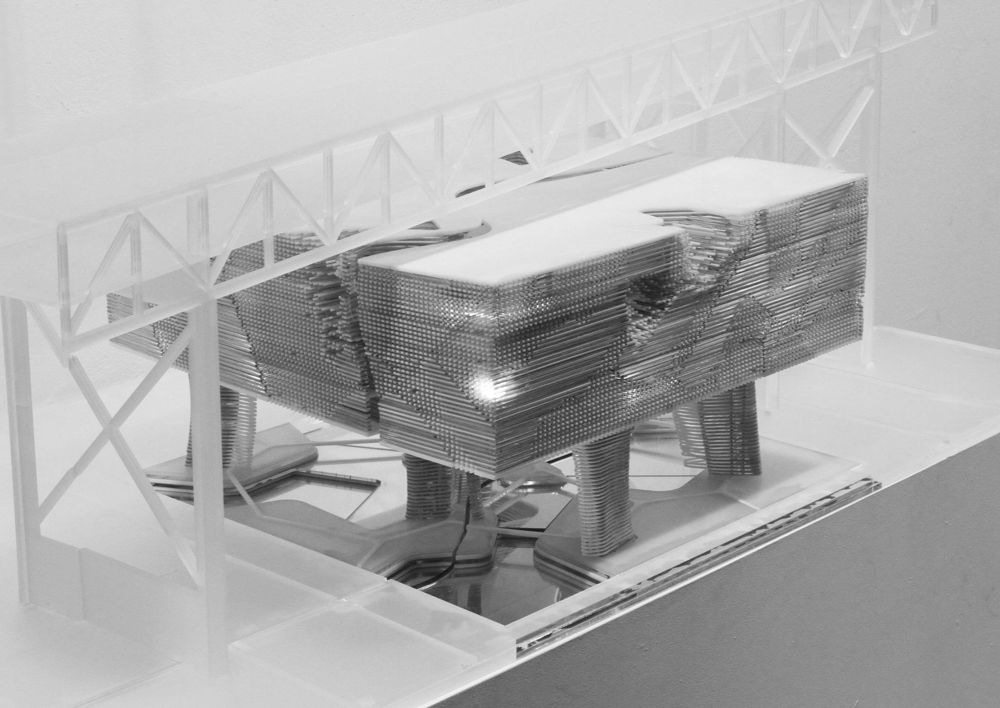

Ghost of the Abyss
Architecture | Museum
This project builds on the idea of ghostly characteristic in the seductive nature of the image and moves beyond towards a more physical and tectonic outcome.
Comming Soon

This project builds on the idea of ghostly characteristic in the seductive nature of the image and moves beyond towards a more physical and tectonic outcome.
Comming SoonLike the musical instrument case, this sectional object approach raises questions regarding the degree of expression for the object, and the degree of fit for the enclosure.
Comming SoonDigital computation offers unconventional ways to breakdown the data within an image and redeploy it for other purposes.
Comming Soon